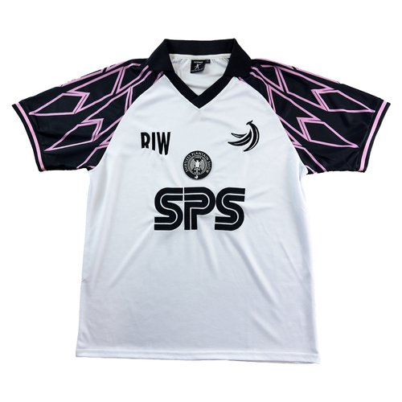
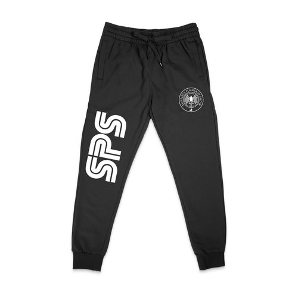
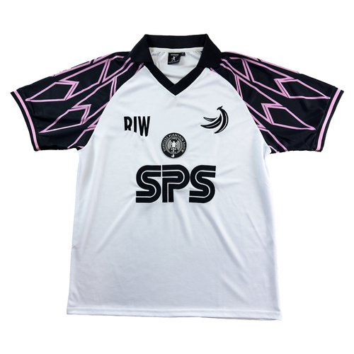
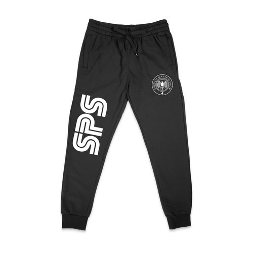

Shirtless Plantain Show
EST. 2018
Who We Are
Founded during the 2018 World Cup by four soccer-obsessed friends of Nigerian heritage, Shirtless Plantain Show (SPS) brings a fresh, authentic voice to the soccer world. With over 30 years of individual experience as players, fans, and analysts, we offer a unique perspective on the game that blends humor, culture, and real talk.
Our Vision
To shift the landscape of soccer content by amplifying authentic, underrepresented narratives through a comedic yet insightful lens.
Why We Started
The soccer media landscape often overlooks diverse voices and perspectives. SPS was born out of our shared desire to fill that gap and tell stories that reflect our backgrounds, humor, and deep-rooted passion for the game. Our aim is to bring fans the soccer content we wanted to see growing up—unfiltered, relatable, and engaging.
What We Do
- Content Creation: From match analysis and fan perspectives to cultural commentary, we bring a distinct voice to the sport, resonating with fans globally.
- Merchandise: Our collection includes soccer jerseys, hoodies, sweatpants, socks, and more. Each piece reflects our brand’s identity and dedication to soccer culture.
- Live Experiences: Showcasing our growth, we hosted live shows in Washington, D.C., and New York City, bringing fans together to celebrate soccer and culture in person.
- Podcast Network: Recently signed to a major podcast network, SPS is expanding its reach and bringing our audience even closer to the game.
 


